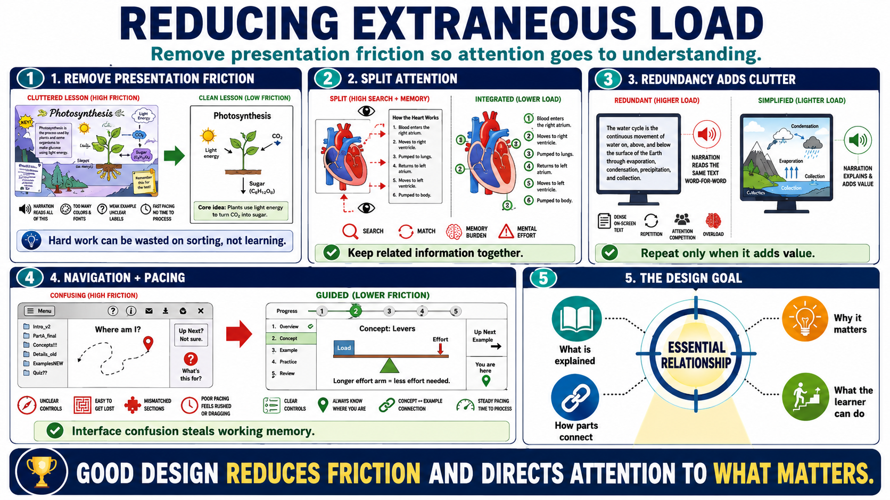

Reducing Extraneous Load
Connecting to LMS... Progress: in progress

Narration
Reducing extraneous load means removing presentation friction that does not support learning. Cluttered slides, decorative graphics, unnecessary detail, weak examples, unclear labels, and poor pacing all consume attention. Learners may still work hard, but their effort goes into sorting through the material rather than understanding the core relationship. Clean design is not about making a course plain. It is about making the important structure visible.
Split attention is a common source of extraneous load. It happens when learners must divide attention between poorly integrated sources of information, such as a diagram on one part of the page and the explanation somewhere else. The learner has to search, match, and remember pieces before understanding can begin. Integrating labels, placing explanations close to the relevant visual, and aligning narration with the diagram can reduce that burden.
Redundancy can also create load. Repeating the same information in unnecessary forms may seem helpful, but it can force learners to process clutter. For example, reading dense on-screen text word for word while the learner sees the same text can become inefficient. The issue is not that repetition is always bad. The issue is whether each representation adds value or merely competes for attention.
Navigation and pacing matter as well. If learners are uncertain where to click, what section they are in, or how examples relate to the current concept, working memory is spent on the interface instead of the idea. Strong materials help learners focus on the essential relationship: what is being explained, why it matters, how the parts connect, and what the learner should be able to do with it.